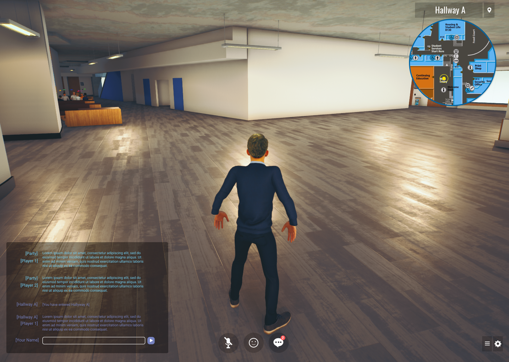

George Brown College - Virtual Campus
game designer, ux designer
figma, unreal engine 4
3 months
overview
A life simulation game of George Brown College’s campus that enhances the Blackboard learning experience where players build and customize cosmetics and furnishings for a custom avatar. Gather rewards by participating in class and completing course content, and promote personal brand by sharing portfolio content to friends and colleagues.

what i did
- Designed the interface and user experience for a life simulation game of George Brown College’s campus.
- Documented and maintained design documents, bug reports, and game spreadsheets.
- Implemented the game menu UIs in Unreal Engine 4.
platform + game genre
The game is played on PC/Mac and the genre is life simulation. It is played in the 3rd person, similar to an MMORPG.
style guide
Game's style for text, colours, and buttons, follows mostly the George Brown College's style guide. A darken blue was added for the dashboard to make dark themed interface. Orange is used as a secondary colour to compliment the blue.
account + login
In order to access the game, players must be members of George Brown College either as students, professors, or guests (made by admin). Accounts are connected to GBC's Blackboard.

The login screen is the default screen that appears when the player first boots up the game. Players must have an existing Blackboard account in order to log into the game. Players without an account are required to sign up before they can access the game which is provided by the school administration. Login information provided is an email (consisting of a George Brown Number and email) and a password. The login screen features an option to quit the game and/or pull up a help section (which pulls up a web browser).
menu interfaces
The game menu consists of a series of buttons and interfaces the player can select and tab from to view announcements, events, messages, Blackboard information, and edit settings.
Selectable Interfaces include: Messages, Grades, Objective, Calendar, Map, Voice Chat, Friends, Settings, Exit.
Each time a player selects one of these interfaces, the menu tabs out to the selected interface with its content.
onboarding + tutorial
Once the player has successfully logged into their account, they are given a simple welcome message. A tutorial prompt quickly follows after to either play or skip the tutorial. The welcome message and tutorial prompt are displayed on top of the player’s screen with only a single HUD on the bottom right to allow the player to go next.
Tutorial covers basic playthrough to gather currency, purchasing items, and interacting in a classroom setting.
player-to-player interaction
Players can interact with one another by using emotes, game chat, voice chat, and through live classes where they can interact with professors to answer questions on Blackboard.
character + avatar customization
Players can customize their character’s facial/head features by going near their designated locker.
Outfits can be purchased from stores located around the campus and added to your inventory to wear and customized.